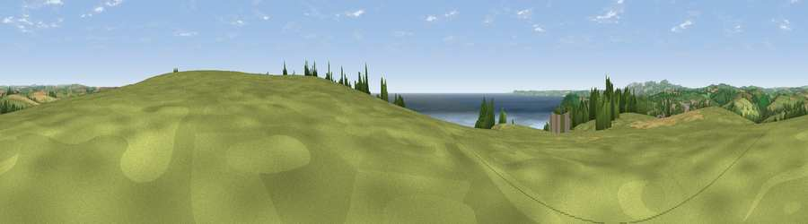

Viewpoint near Polruan
#3599 in England · top 9% of its area beats it · near PolruanWhere it is
The exact computed spot (SX 13475 50800). Click the marker for map links.
The view, rendered

A 360° render of this exact spot computed from the terrain model, tree cover and land cover — summer colours, afternoon light, calibrated against photographs of famous viewpoints. Real trees, hedges and buildings will differ in detail.
The panorama
Grey silhouette: terrain skyline in each direction (720 bearings, Earth curvature and refraction included). Dashed green: skyline with trees (+15 m) and buildings (+8 m) as obstacles. Blue strip: how far the ground is visible on each bearing.
Where the view opens
Wedge length = distance to the farthest visible ground on that bearing (vegetation-aware). Rings at 10, 25 and 50 km.
What fills the view
44% grassland · 31% water · 13% cropland · 10% woodland · 2% built-up
Angular shares of the visible panorama (visual magnitude), not map area. Landscape diversity 0.56 (0–1 Shannon).
Key numbers
More beautiful places nearby
The staircase of upgrades: each row has a higher view potential than everything closer. Driving times are estimates from straight-line distance, calibrated against real road routing — check an actual route before setting out.
| Place | Direction | Drive | Score |
|---|---|---|---|
| Viewpoint near Polruan | E · 0 km | ~1 min | 77.5 |
| Viewpoint near Polruan | ENE · 1 km | ~3 min | 79.4 |
| Pencarrow Head | E · 2 km | ~5 min | 86.0 |
| Viewpoint near Stenalees | WNW · 15 km | ~27 min | 88.0 |
| Viewpoint near Crackington Haven | N · 43 km | ~63 min | 88.1 |
| Viewpoint near Combe Martin | NNE · 108 km | ~132 min | 88.9 |
| Holdstone Hill | NNE · 108 km | ~133 min | 90.2 |
| The Knoll | ENE · 144 km | ~168 min | 91.0 |
50.32754, -4.62195 · source: screening · position refined by local search. Computed location — check access rights before visiting.